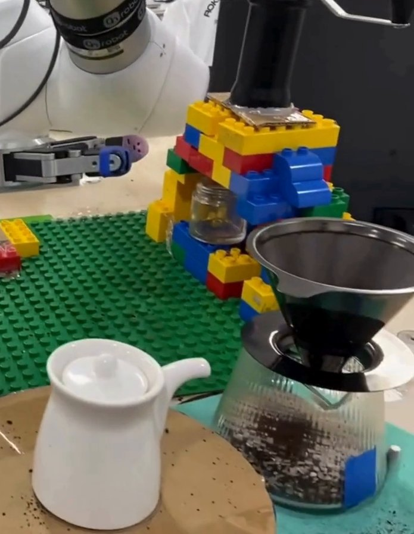
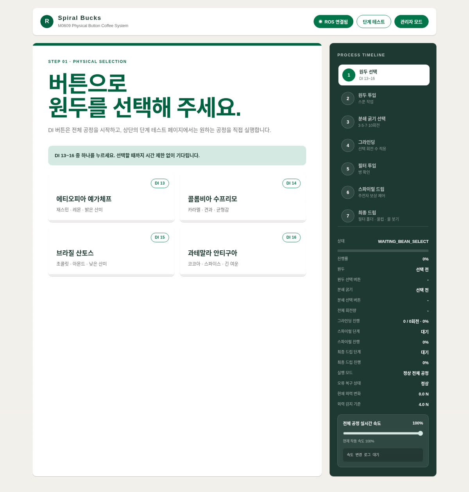
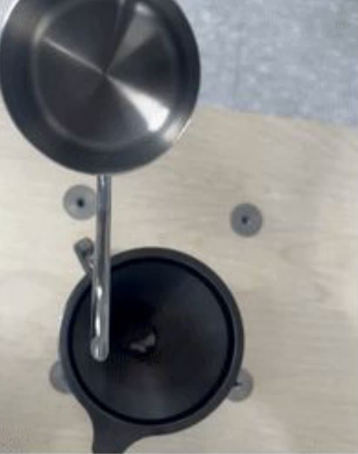
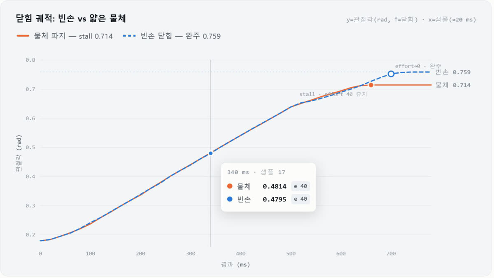
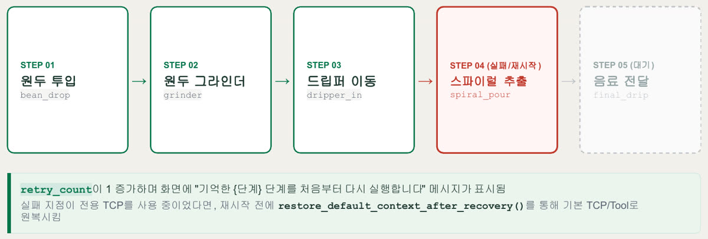
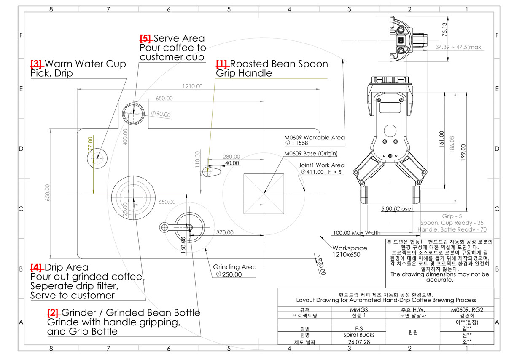

한눈에 보기
- 카메라 없이 협동로봇의 힘 센서와 그리퍼(물체를 잡는 로봇 손)의 접점 신호(물체를 잡았는지 알려 주는 신호)만으로 원두 계량부터 서빙까지 핸드드립 공정을 자동화하는 것이 목표였습니다.
- 5인 팀에서 그리퍼 예외 상황 처리와 정상 공정 복귀 알고리즘을 맡았고(발표 역할표 기준이며 실제 작업은 경계가 겹치는 공동작업), 작업 환경 도면을 그렸습니다.
- 26.07.15~26.07.29, 두산로보틱스 ROKEY 부트캠프에서 Doosan M0609 협동로봇과 OnRobot RG2 그리퍼로 진행했습니다.
1분 시연 영상
무엇을 만들었나
카메라 없이 이어지는 5단계 공정
팀은 카메라 없이 교시 좌표(로봇에 미리 가르쳐 저장한 위치)와 힘·접점 신호만으로 원두 계량, 분쇄, 필터 투입, 나선 드립, 서빙을 하나의 공정으로 이었습니다.
작업자가 컨트롤박스(로봇 제어기)의 버튼으로 원두를 고르면 로봇이 스푼으로 원두를 떠 그라인더(원두 분쇄기)에 넣고, 그라인더 손잡이를 잡아 돌려 원두를 갑니다. 진행 상황은 팀이 만든 웹 화면에 단계별로 표시됩니다.


주전자를 기울이며 붓는 나선 드립
핸드드립은 물줄기가 그리는 나선과 주전자 기울기가 맛을 좌우하는데, 사람이 부으면 매번 손이 흔들립니다. 팀은 로봇이 같은 나선 궤적으로 물을 붓도록 하는 것을 목표로 삼았고, 나선 이동과 주전자 기울임을 하나의 연속 동작으로 묶었습니다.

물체를 잡았는지 판정하기
최종 제출본에서 저는 그리퍼가 보내는 잡힘 신호를 먼저 보고, 그 신호 데이터가 들어오지 않으면 손가락이 닫힌 위치와 힘으로 판정하도록 했습니다. 빈손이면 손가락이 끝까지 닫히고 물체를 잡으면 그 전에 멈춘다는 차이가 기준입니다.
신호가 끊겼을 때 로봇을 멈추는 감시와, 판정이 애매한 경우의 처리는 아래 진행 과정에 적었습니다.

진행 과정
팀은 먼저 트레이 밸런싱(쟁반 위 컵의 무게중심을 유지하는 동작)을 시도했고, 저도 그 가능성을 검증하는 코드를 짰습니다.
검증해 보니 추가 센서 없이 서빙 로봇의 엔드이펙터(로봇 팔 끝에 다는 도구)를 평행하게 유지하는 알고리즘을 짜기 어려워, 팀은 07/23 핸드드립 공정으로 주제를 바꿨습니다.
카메라가 없어 물체를 잡았는지는 그리퍼 신호로만 알 수 있었습니다. 그런데 물체를 손가락 안쪽까지 깊게 물면 잡힘 신호가 뜨지 않았습니다. 이를 실패로 읽으면 로봇이 물체를 문 채 다시 집으러 갈 수 있었습니다.
저는 최종 제출본에서 그리퍼 신호가 1초 넘게 끊기면 로봇 정지를 요청하는 감시를 맡았습니다. 제출 뒤 이어 간 개발본에서는 잡힘 신호가 없어도 접촉 흔적이 남은 경우를 '판정 불가'로 따로 떼어, 다시 집지 않고 사람이 확인하게 했습니다.
초기에는 오류가 나면 프로그램을 끝내거나 공정 전체를 다시 시작했습니다. 저는 실패한 단계만 재실행하고, 재시도와 중단은 작업자가 컨트롤박스(로봇 제어기) 버튼으로 정하게 바꿨습니다. 로봇이 무엇을 들고 있는지 모른 채 자동 복구하면 더 위험하다고 봤기 때문입니다.

팀은 힘·접점 신호와 교시 좌표(로봇에 미리 가르쳐 저장한 위치)만으로 5단계 공정을 최종 시연까지 이어 갔습니다.
팀에서 일한 방식
카메라(비전 센서)가 없어 거의 모든 좌표를 로봇을 직접 움직여 펜던트(로봇 조작 단말)로 하나하나 교시해야 했습니다. 팀은 공정별 상대 이동과 좌표 변환(기준 위치에서 얼마만큼 옮길지 계산해 위치를 정하는 방법)으로 일일이 교시해야 하는 부담을 줄이려 했고, 역할은 공정 단계별로 나눠 티칭(로봇을 움직여 위치를 가르치는 작업)을 반복하면서 각자 익숙해진 파트를 골라 맡았습니다. 매일 함께 작업하며 진행 상황과 코드를 공유했고, 멘토에게 기능 구현과 예외 처리에 대한 피드백을 받았습니다.
나선으로 물을 붓는 단계는 로봇 내장 나선 명령으로 주전자 기울임까지 함께 지정할 수 없었습니다. 팀은 경유점(로봇이 차례로 지나갈 중간 위치)을 직접 만들어 하나의 연속 경로로 움직이는 방식으로 바꿨고, 저는 좌표 변환 계산에 함께 참여했습니다.
로봇을 실제로 돌리기 위한 준비는 팀이 함께 정했습니다.
- 장비·네트워크 설정
- 재교시 기준(도구 위치가 바뀌면 위치를 다시 가르치는 기준)
- 실행 전 점검
짧은 기간과 개발 중 잦은 변동으로 처음부터 도면을 정하고 시작하지는 못했습니다. 그래도 위치가 틀어질 때를 대비해, 저는 로봇 작업 영역과 공정 위치, 그리퍼 벌림 폭 등 위치와 치수를 규격화하는 작업 환경 도면을 사후에 한 장으로 정리했습니다. 코드가 어떤 환경에서 동작하는지 이해하도록 돕는 문서이며, 도면 치수가 코드의 교시 좌표와 그대로 맞지는 않습니다.

배운 점
협동로봇과 그리퍼의 기본 구동·티칭은 부트캠프 공통 교육으로 익혔지만, 잡았는지를 판정하는 방법은 따로 찾아야 했습니다.
저는 제조사 RG2 패키지 코드를 읽으며 "닫힐 때 하드웨어가 힘을 잴 것"이라는 가설을 세우고, 판정에 쓸 신호(잡힘 신호·손가락 위치·힘)를 찾았습니다. 빈손일 때와 물체를 잡았을 때의 실측값을 기준 삼아 프로젝트 중반쯤 실기에서 확인했습니다.
센서 신호로 상태를 판정할 때는 신호가 애매해지는 경우부터 정리해야 한다는 점을 배울 수 있었습니다.
기술 상세
그리퍼 판정·나선 드립 펼쳐 보기
그리퍼 신호가 1초 넘게 끊기면 정지를 요청하도록 했고, 병행 개발본에서는 잡았는지 판정할 수 없는 순간을 따로 분리해 물체를 문 채 다시 집지 않도록 했습니다.
나선 드립은 위치는 삼각함수, 자세는 회전행렬(도구의 기울기를 나타내는 수학 표현)로 경유점을 만들어 하나의 연속 경로로 움직입니다.
코드 근거
Rokey_cobot1 — 팀 최종 코드(README가 코드 구성과 작업 환경 도면을 설명합니다)